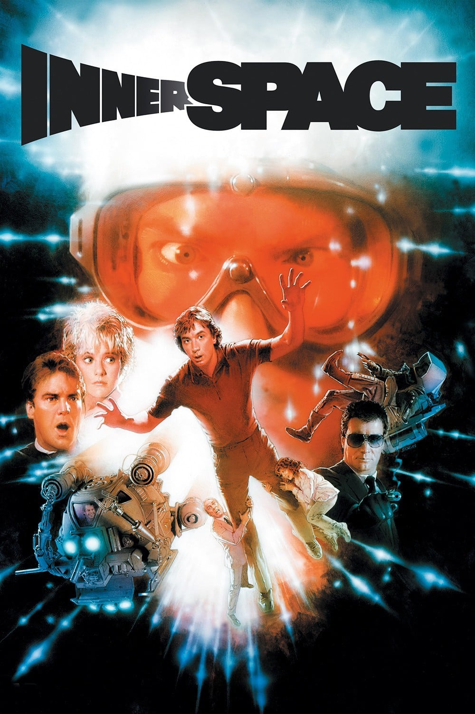

Мировая премьера: 1 июля 1987
Слоган: Отправьтесь в путешествие, которые вы никогда не забудете.
Сюжет: Джек Паттер ощущает себя необычно – впрочем, для ипохондрика, тревожащегося 25 часов в сутки, это привычно. Но сегодня Джек начинает слышать голос. Однако это не дьявольское наваждение, а голос лейтенанта ВМС Така Пендельтона, чьё тело было очень сильно уменьшено в ходе секретного эксперимента. Миниатюризированный пилот по ошибке оказался в кровеносной системе Джека, и прежде чем бедняга успевает опомниться, его непрошеный "пассажир" втягивает его в водоворот безумных приключений.
Режиссёр: Джо Данте
В ролях: Деннис Куэйд, Мартин Шорт, Мег Райан
| Деннис Куэйд | Лейтенант Так Пендельтон |
| Мартин Шорт | Джек Паттер |
| Мег Райан | Лидия Максвелл |
| Кевин МакКарти | Виктор Скримшоу |
| Фиона Льюис | Доктор Маргарет Кэнкер |
| Роберт Пикардо | Ковбой |
| Уэнди Шаал | Уэнди |
| Гарольд Сильвестр | Пит Блэнчард |
| Уильям Шаллерт | Доктор Гринбуш |
| Генри Гибсон | Мистер Уормвуд |
| Джон Хора | Оззи Уэкслер |
| Марк Л. Тейлор | Доктор Найлс |
| Вернон Уэллс | Мистер Айго |
Бюджет: $ 27 млн.
Кассовые сборы в США: $ 26 млн.
Кассовые сборы в мире: $ 26 млн.
Продолжительность: 1 ч. 56 мин.
Рейтинг: 6.8